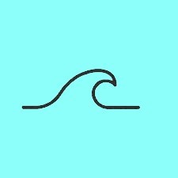

<DOCTYPE! html>
<html lang="en">
<head>
  <meta charset="utf-8">
  <title>Basic html Content Page</title>
  <link rel="stylesheet" type="text/css" href="CSS-Template.css">
  <style>section
	{
		float: left;
		width: calc(80% - 100px);
		margin: 0 50px 50px 50px;
	}
	</style>
</head>
<body class="hello">
  <header>
    <h1>The Movement  of The Ocean</h1>
	<h2>Blake Sanders</h2>
	<h3>8B</h3>
  </header>
  <nav>

    <ul>
	  <li><a href="HTML-HomePage.html">Home</a></li>
	  <li><a href="HTML-ContentPage.html">Content</a></li>
	  <li><a href="HTML-VideoPage.html">Videos</a></li>
	  <li><a href="HTML-LinksPage.html">Links</a></li>
    </ul>
  </nav>
  <section>
    Links to extra info
    <header><a href="https://www.ducksters.com/science/earth_science/ocean_waves_and_currents.php">Waves and Currents</a><br>
			<a href ="https://www.ducksters.com/science/earth_science/ocean_tides.php">Tides</a><br>
			<a href="http://www.mbgnet.net/salt/sandy/anim2.gif">The wave gif</a><br>
			<a href="https://aamboceanservice.blob.core.windows.net/oceanservice-prod/education/kits/tides/media/tide05a_300.gif">the tide diagram gif</a><br>
			<a href="https://oceanservice.noaa.gov/facts/wavesinocean.html">more wave info</a><br>
	</header>
    <article>This has been a study of tides, waves, and currents. Thank you for your time!</article>
    <footer>-Blake Sanders</footer>
  </section>
  <footer>
    <br>
	Blake Sanders' Ocean Research<br>
	11677 Oxford Crest lane<br>
	<a href="mailto:spinball64@gmail.com"> Email Me!</a>
	<p style="font-size:75%;"> Sanders Research Foundation</p>
  </footer>
</body>
</html>